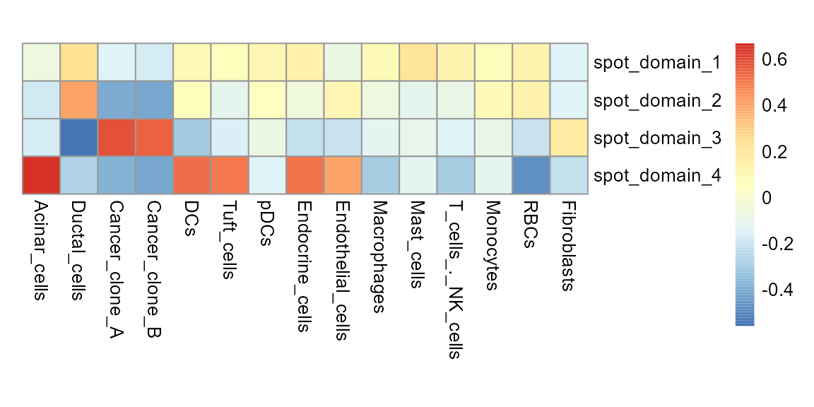
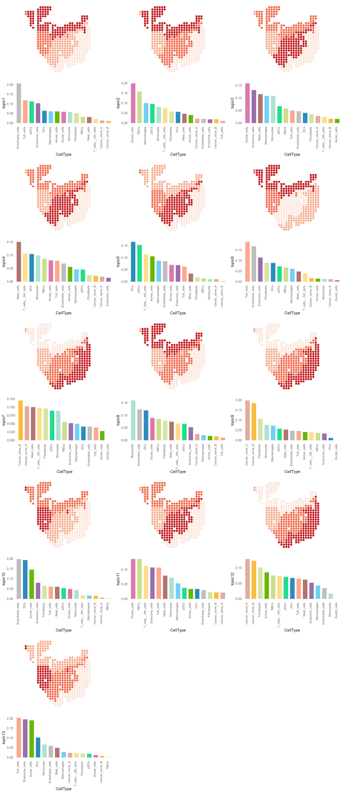
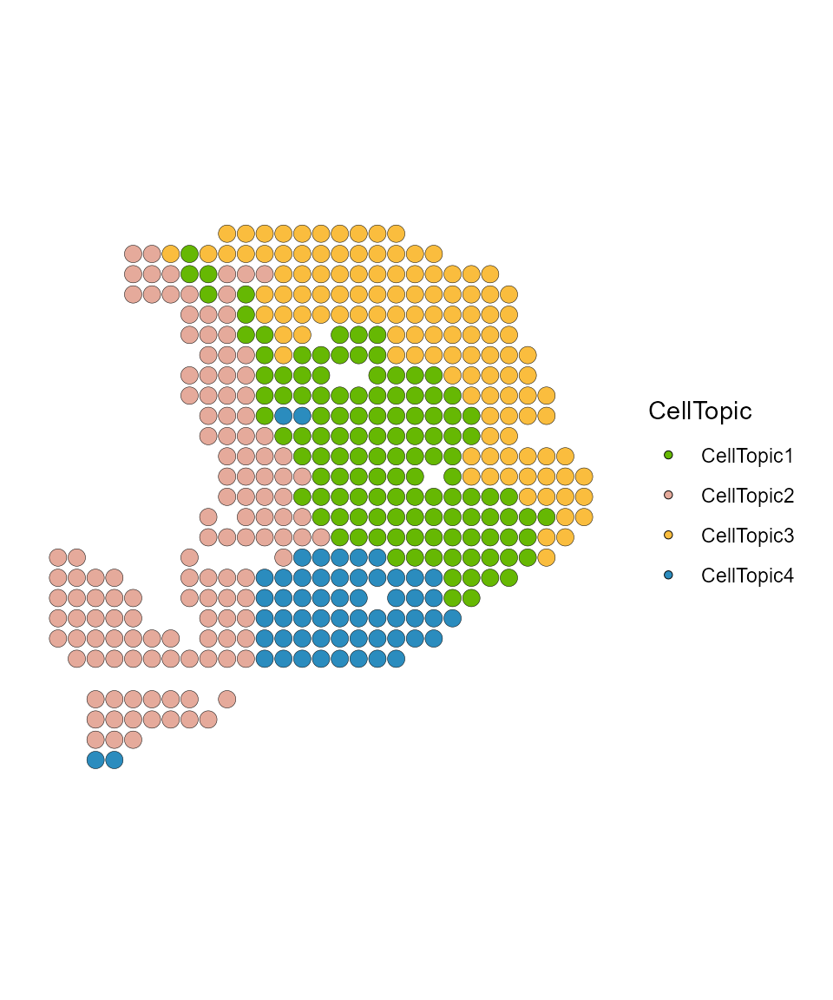
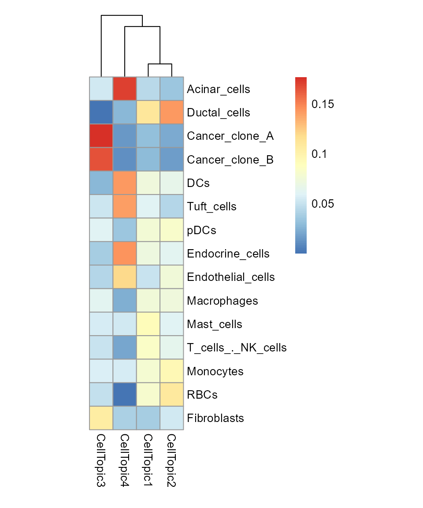
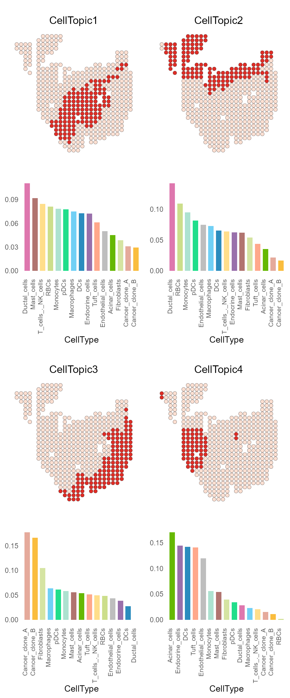

Load data
library(SpaTopic)
library(ggplot2)
library(cowplot)
library(pheatmap)
my_colors <- c("#66b803", "#E5AA9B", "#FABD3E", "#2B8CBE", "#DE77AE", "#9970AB", "gray", "#D5E4A2", "#71D0F5", "#B1746F", "#ADE2D0", "#20DE8BFF", "#CCDE8BFF", "#FFDE8BFF", "#FFA88BFF")
data(spot_celltype)
data(spot_clusters)
load("vignette_data/PDAC_obj.rda")SpaTopic workflow
The workflow of SpaTopic is detailed below, including Kolmogorov-Smirnov (KS) test, Latent Dirichlet Allocation (LDA), and FindCellTopic.
KS test
First, we use KS test to calculate the specificity score for cell types across different spot domains.
domain_cellytpe <- ksTest(spot_celltype, spot_clusters, cluster = "spatial.cluster")
pheatmap(domain_cellytpe, cluster_rows = FALSE, cluster_cols = FALSE,
cellwidth = 20, cellheight = 20)
LDA model
Then we can get the topic that can represent the spatial domain through the LDA model.
topic_list <- MatrixFactorization(domain_cellytpe, num_topics = 13)
dt_topic_data <- topic_list[["domain_topic"]]
ct_topic_data <- topic_list[["celltype_topic"]]Show each topic from the LDA model.
# plot prepare
PDAC_obj <- AddMetaData(PDAC_obj, spot_clusters["spatial.cluster"])
df <- as.data.frame(t(dt_topic_data[,match(PDAC_obj$spatial.cluster,gsub("spot_domain_", "", colnames(dt_topic_data)))]))
rownames(df) <- colnames(PDAC_obj)
PDAC_obj <- AddMetaData(PDAC_obj, df)
colors_num <- ncol(dt_topic_data)
topics <- colnames(ct_topic_data)
bar_plot_data <- ct_topic_data
bar_plot_data$CellType <- rownames(ct_topic_data)
plot_list <- list()
for (i in seq_along(topics)){
p <- SpatialPlot(PDAC_obj, group.by = topics[i], pt.size.factor = 8, stroke = NA) + scale_fill_manual(values = rev(c("#CB181D", "#FB6A4A", "#FCAE91", "#FEE5D9"))) + NoAxes() + NoLegend()
bar_plot <- ggplot(bar_plot_data, aes(x = reorder(CellType, !!sym(topics[i]), decreasing = TRUE), y = .data[[topics[i]]])) +
geom_bar(aes(fill = CellType), stat='identity', width = 0.7) +
xlab('CellType') +
scale_fill_manual(values = my_colors) +
theme_minimal() + NoGrid() +
theme(legend.key.size = unit(0.3, "cm"),
legend.position = "none",
axis.text.x = element_text(angle = 90, hjust = 1, vjust = 0, size = 8))
plot_list[[i]] <- plot_grid(plotlist = list(p, bar_plot), ncol = 1)
}
plot_grid(plotlist = plot_list, ncol = 3)
FindCellTopic
We assign each spot domain to one or more specific topics (termed ‘CellTopics’)
result_list <- FindCellTopic(dt_topic_data, ct_topic_data, spot_clusters, cluster = "spatial.cluster", percent = 0.7)
PDAC_obj <- AddMetaData(PDAC_obj, result_list[["CellTopic"]])
SpatialDimPlot(PDAC_obj, label = FALSE, group.by = "CellTopic", pt.size.factor = 8) + scale_fill_manual(values = my_colors) + coord_flip()+ scale_y_reverse()
pheatmap(result_list[["celltype_topic"]],
cluster_rows = FALSE,
cellwidth = 20, cellheight = 20)
When use Binarization = TRUE, It returns a result of the
same form, but focus less on percentages and more on the information
carried by a single topic.
# Not run, just show
result_list <- FindCellTopic(dt_topic_data, ct_topic_data, spot_clusters, cluster = "spatial.cluster",Binarization = TRUE)Plot
CellTopic_plot can be used to display the spatial
location and cell types of one or more CellTopics at the same time.
CellTopic_plot(PDAC_obj,
celltype_topic = result_list[["celltype_topic"]],
cols.highlight = c("#DE2D26", "#FEE0D2"),
cols.celltype = my_colors,
pt.size.factor = 8)